NodeEEBench with Digilent CMOD A7 FPGA boardJörg Vollrath, University of Applied Science Kempten, Germany, Joerg.vollrath@hs-kempten.deJuly, 2026 OverviewHardwareCMOD A7, PMOD AD2, PMOD DA2, R2R PMOD, MCP4728 DAC, MCP6022 SoftwareConfiguration, AWG, Oscilloscope, Power supply OperationSummaryTo Do ListFurther Documentation: Installation and Overview |
Hardware Installation CMOD A7
The CMOD A7 FPGA board provides 2 analog inputs with 845 Ohm input resistance
and 0..3.3V voltage range. These are not used due to their low input resistance.
The current configuration uses 4 analog inputs with 0..1V input range.
The PMOD can be used as digital output providing 8-Bit AWG values.
These can be used for an R2R DAC converter.
Logic and control is provided for a PMOD AD2 (OSC), PMOD DA2 (AWG, Triangle)
and MCP4728 DAC (Power supply interface).
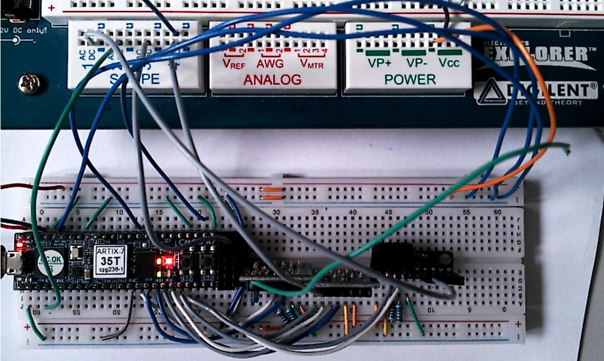
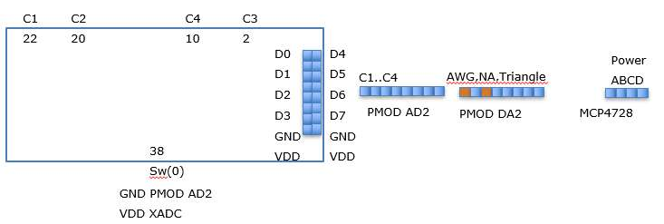
Figure: CMOD A7 FPGA Board with PMOD AD2, DA2 and MCP4728
Additional circuitry can adjust the input and output range ( Interface and Power Documentation).
Connections
| EEBench | BASYS3 EEBench.vhd | CMOD A7 | XC7A35T-1CPG236C Artix-7 | CMOD A7 | PMOD JB | CMOD A7 | XC7A35T-1CPG236C Artix-7 |
CMOD A7 | BASYS3 EEBench.vhd | EEBench |
| OSC2 GND | ain_n[2] | ain_n2 | M3 | 1 | 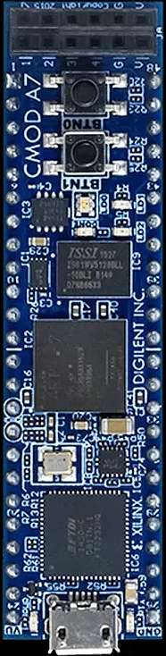 |
48 | V8 | RDY MCP4728 | JC(0) | Power |
| OSC2 IN | ain_p[2] | ain_p2 | L3 | 2 | 47 | U8 | LDAC MCP4728 | JC(1) | Power | |
| A16 | 3 | 46 | W7 (1k Pullup) | SDA_0 MCP4728 | JC(2) | Power | ||||
| OSC1 GND | ain_n[1] | ain_n1 | K3 | 4 | 45 | U7 (1k Pullup) | SCL_0 MCP4728 | JC(3) | Power | |
| C15 | 5 | 44 | U3 | CS_1 PMOD DA2 | JC(4) | AWG2 Triangle | ||||
| H1 | 6 | 43 | W6 | D1 PMOD DA2 | JC(5) | AWG2 Triangle | ||||
| A15 | 7 | 42 | U2 | D2 PMOD DA2 | JC(6) | AWG2 Triangle | ||||
| B15 | 8 | 41 | U5 | CLK_1 PMOD DA2 | JC(7) | AWG2 Triangle | ||||
| A14 | 9 | 40 | W4 (1k Pullup) | SDA_1 PMOD AD2 | JA(3) | OSC SW(0)='1' | ||||
| OSC1 IN | ain_p[1] | ain_p1 | J3 | 10 | 39 | V5 (1k Pullup) | SCL_1 PMOD Ad2 | JA(2) | OSC SW(0)='1' | |
| J1 | 11 | 38 | U4 | SW_0 | SW[0] | SW(0)='1' PMOD AD2 | ||||
| K2 | 12 | 37 | V4 | JA{3] | ||||||
| L1 | 13 | 36 | W5 | JA{2] | ||||||
| L2 | 14 | 35 | V3 | JA{1] | ||||||
| Analog | G2/G3 | 15 | 34 | W3 | JA{0] | |||||
| Analog | J2/H2 | 16 | 33 | V2 | ||||||
| OSC3 GND | ain_n[3] | ain_n3 | M1 | 17 | 32 | W2 | ||||
| N3 | 18 | 31 | U1 | |||||||
| P3 | 19 | 30 | T2 | |||||||
| OSC3 GND | ain_p[3] | ain_p3 | M2 | 20 | 29 | T1 | ||||
| OSC4 GND | ain_n[4] | ain_n4 | N1 | 21 | 28 | R2 | ||||
| OSC4 IN | ain_p[4] | ain_p4 | N2 | 22 | 27 | T3 | TX UART | |||
| P1 | 23 | 26 | R3 | RX UART | ||||||
| VU | 24 | Micro USB | 25 | GND |
Connectivity list
Pin 25 - GND, Pin 38 VDD (PMOD AD2), top-bottom VDD, top-bottom GND, center bridge top GND, center bridge top VDD, center bridge bottom GND, center bridge bottom VDD
XADC:
Pin 1 GND, Pin 2 C2 in, Pin 4 GND, Pin 10 C1 in, Pin 17 GND, Pin 20 C3, Pin 21 GND, Pin 22 C4 in
PMOD AD2 (Jumper Vref):
Pin 39 SCL, R=1kOhm SCL VDD, Pin 40 SDA, R=1kOhm SDA VDD, PMOD AD2 GND GND, PMOD AD2 VDD VDD
PMOD DA2:
Pin 41 CLK - PIN 4 PMOD, Pin 42 - PIN 3 DINB PMOD, Pin 43 - Pin 2 DINA PMOD, Pin 44 - Pin 1 ~SYNC PMOD, GND - GND Pin 5 PMOD, VDD - VDD Pin 6 PMOD
MCP4728 4 chan DA:
VDD - VDD, GND - GND, Pin 45 - SCL, Pin 46 - SDA, LDAC - GND
Power supply:
Pin 24 VDD
A low voltage rail-to-rail Operational amplifier like the MCP6022 can be used as a buffer amplifier.
MCP6022: fbw = 10 MHz, VDD = 2.5 .. 5.5 V
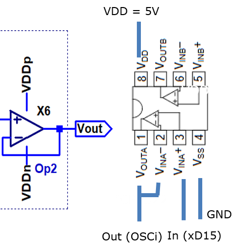
Figure: MCP6022 Output buffer wiring
After connecting all parts and connecting the BASYS3/CMOD A7 via USB to a Windows PC a bit file can be loaded each time the board is powered via Vivado or a bin file can program the onboard Flash memory. Vivado 2019.1 is used in this project.
The Xilinx project, .bit and .bin files are in the subdirectory Xilinx.
Then the board is ready for use.
Hardware Features
4 channel, 12-Bit, 125 kSps, 0..1 V range ADC oscilloscope FPGA (XADC)
4 channel, 12-Bit, xx kSps, 0..3.3 V range ADC oscilloscope PMOD AD2
2 channel (AWG, Triangle), 12-Bit, xx kSps, 0..3.3 V range PMOD DA2
4 channel (Power control output), 12-Bit, xx kSps, 0..3.3 V range MCP4728
8, 256, 512, 1k, 2k, 4k samples transfered via UART with Baud rate 230400
Vivado FPGA configuration
The FPGA configuration is done using the VHDL files in subdirectory Xilinx/EEBench
The main file for the CMOD A7 is "Xilinx\EEBench\EEBench.srcs\sources_1\new\EEBenchCA7.vhd" and for the BASYS3 FPGA "EEBench.vhd" (Select top module).
The "EEBenchCA7.vhd" is only a wrapper mapping the BASYS3 pins to the CMOD A7 module pins and synthesizing a 100 MHz internal clock from the 12.5 MHz clock of the CMOD A7.
The constraints file: "Xilinx\EEBench\EEBench.srcs\constrs_1\imports\2026_07\CmodA7_Master.xdc" has to be active for the CMOD A7 (Right click make active)!
The constraints file: "Xilinx/EEBench/EEBench.srcs/BASYS3/imports/2026_07/Basys3_Master.xdc" has to be active for the BASYS3 (Right click make active)!
A list of the source files before CMOD A7 modification is shown below.
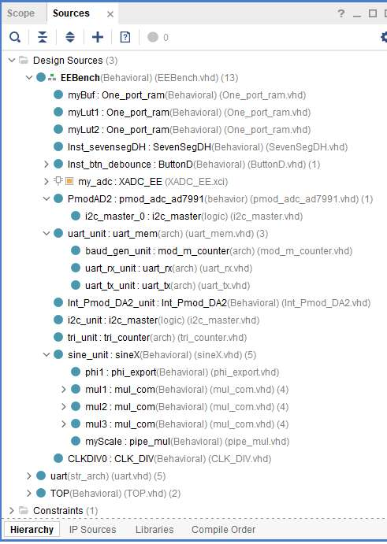
Figure: EEBench design sources
PMOD DA2, PMOD AD2, MCP4278 I2C, SPI Support (26.06.2026)
CMOD A7, BASYS3:
(working)PMOD AD2 with I2C is attached to BASYS3: JA3 SCL, JA4 SDA, GND, VDD, 1kOhm resistors are used as pullup.
(working)PMOD DA2 with SPI is attached to BASYS3: JC5..8.
(working)MCP4728 with I2C is attached to BASYS3: JC1..4 1kOhm rsistors as pullup are required.
There are only 8 outputs left for the DAC upper bits BASYS3: JB PMOD.
PMOD AD2
The PMOD AD2 utilizes the Analog Devices AD7991 4 channel, 12 bit, 1us conversion time (14 MHz bandwidth) and 1.7/3.4 MHz I2C interface device.
1 kOhm pull up resistors are connected between SCL, SDA and VDD to generate the high level of the traces. The Figure shows SDA (C1 yellow) and SCL (C2 blue).
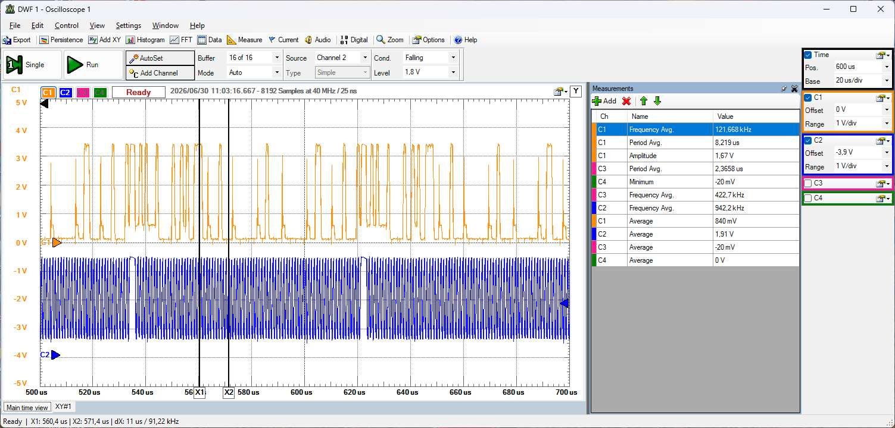
Figure: Measurement of PMOD AD2 communication
The clock runs at f = 1 MHz, T = 1 us ("pmod_adc_ad7991.vhd" instance 'i2c_master_0' bus_clk). A full acquisition needs approximately Tupdate = 80 us and a sampling frequency of fsample = 12.5 kHz.
Due to the vhdl code of data acquisition the data memory is filled every Tsample = 8/(1 MHz) = 8.32 us (?!).
The pmod_adc_ad7991.vhd module uses the i2c_master.vhd file for realization of data acquisition according to a DigiKey TechForum notice.
In the file "EEBench.vhd" in the process 'storeMem:' an if-statement with switch (0):
if (SW(0) = '0')then
-- XADC data transfer to memory
else
-- PMOD AD2 data transfer adc_ch<i>_data to memory
end if;
controls the data acquisition. For longer sample times the data acquisition time is changed with the "O" command automatically by the client side Javascript in the Projekt.html file.
The instance 'PmodAD2:' realizes the state machine to fill adc_ch<i>_data registers.
For the CMOD A7 sw(0) at pin 38 is connected to gnd or vdd.
PMOD DA2
The PMOD DA2 uses a TI DAC121S101 12-Bit DA converter with 8 us settling time. With a serial interface with clock rates up to 30 MHz.
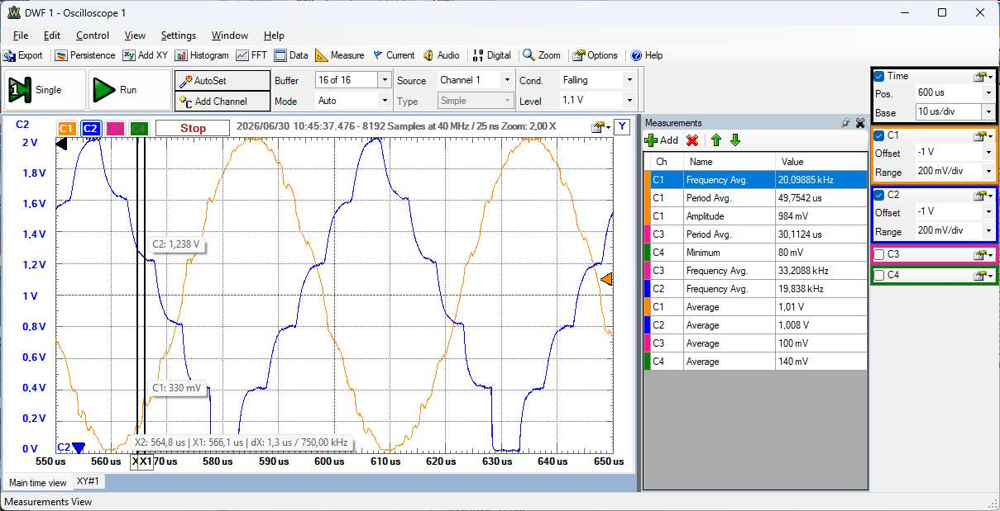
Figure: PMOD DA2 output voltage
The int_PMOD_DA2.vhd module realizes the communication to the PMOD.
The CLK runs at 12.5MHz and gives a Ts = 18 / (12.5 MHz) = 1.44 us update rate delivering a frequency of fs =1/Ts = 690 kHz.
The waveforms show a visible 5us time until the voltage level is changed.
MCP4278 I2C
The MCP4728 is a 12-Bit DAC with I2C (100 kbps, 400 kbps, 1.7 Mbps and 3.4 Mbps) interface and tsettling = 6 us settling time. Delivering a maximum current of 25 mA at the outputs.
There are 2 pins SCL (C2 blue), SDA (C1 yellow) figure, which have to be pulled up to VDD with a 1 kOhm resistance for the FPGA connection.
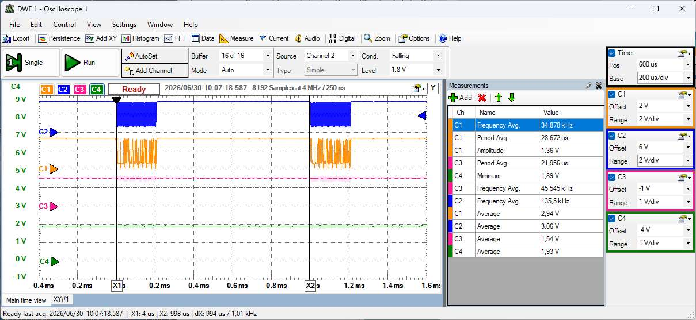
Figure: I2C communication of a fast write
Every 1 ms a new voltage setting for all 4 channels is sent via a fast write.
The detailed simulation of the fast write is shown in the next figure:
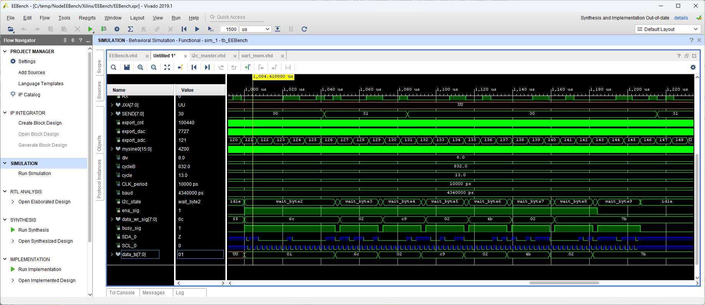
Figure: Simulation of I2C communication of a fast write
The simulation is based on the "tb_EEBench.vhd" file using the i2c_unit instance of the "i2c_master.vhd" and a 'i2c_tran:' process in "EEBench.vhd" to transfer the 9 bytes via i2c interface.
The I2C adress is followed by 4 times 2 bytes per channel. SCL is running at f1=400 kHz (400 kbps), t1 = 2.5 us giving 9 bits times 2.5us = 22.5 us per Byte and Ttotal = 9 * 22.5 us = 212.5 us in total.
The 'i2c_tickP:' CLK process in "EEBench.vhd" initiates every 1 ms the data transfer.
Monitoring the SCL and SDA pins at the FPGA can help debugging and determining the real clock frequency of the FPGA.
Pmod R2R DAC
A PMOD R2R DAC can be attached to the CMOD A7 PMOD connector to convert the digital outputs from the AWG to an analog voltage.
Software
A nodeJS server providing the user interface and serial communication is realized in the top directory of this project with the following files:
A batch file to start the node server: NodeEEBench.bat
A nodeJS server application for communication with FPGA board and providing a user interface: ServerEEBench.js
The HTML user interface: Projekte/NEEBench.html
Some modules are needed for this project:
Chart_2013_03_11/Chart_basic.js for plotting the graphs in consistent colors
css/style.css for formatting the HTML page
FFT/dspFFT.js FFT functions
node_modules: socket.io, fs, path, express, serialport, http
This provides a user interface in the browser at http:\\localhost:3000 with the following tabs.

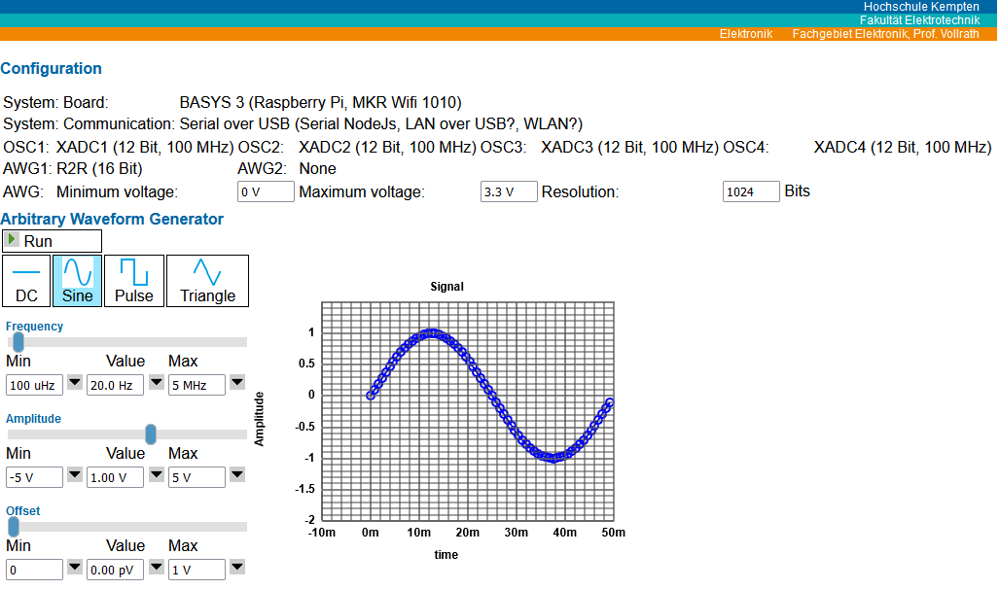
Figure: Configuration and signal generator user interface

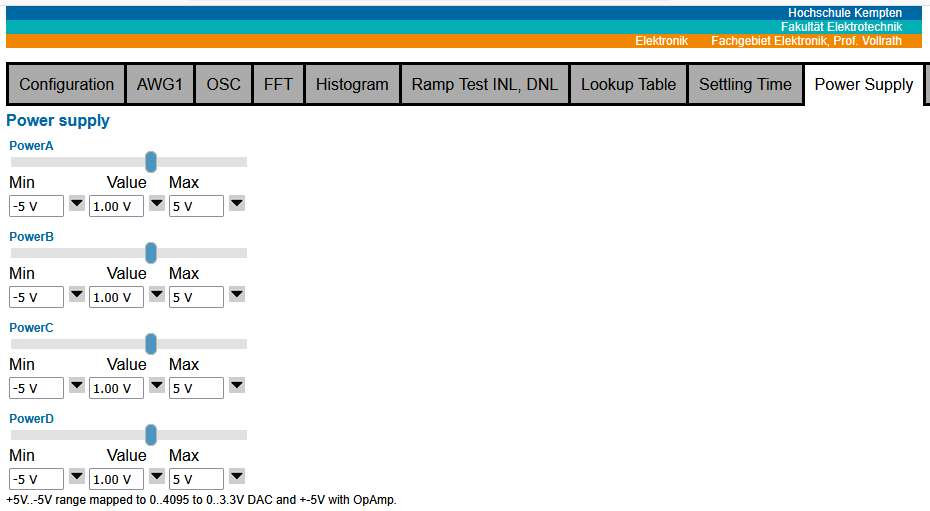
Figure: Oscilloscope and Power Supply
Software features:
Configuration is done with individual serial command transfer.
AWG: DC, stair, triangle and sine generator with frequency, amplitude and offset
OSC: 4 channel and AWG with 8..4096 sample selection, xy display, voltage and code selection, rising, falling single channel trigger, minimum, maximum, average, amplitude, period and frequency calculation.
There is voltage sample data and code data display available. A measured signal can be directly compared to the golden AWG signal in voltage or code.
FFT: AWG1, OSC1, OSC2, OSc3, OSC4 with highest magnitude frequencies and total noise magnitude for ENOB, SINAD, SFDR, SDR calculation.
Histogram with adjustable (16..256) number of bins.
Operation
Start: NodeEEBench.bat
Open localhost:3000 in the browser
Change to AWG1 tab and start AWG with "Run"
Watch the commands in the nodeJS command window and at the configuration tab.
Change to OSC tab and start acquisition with "Run"
A sine signal should be displayed.
Play around: Change number of samples, x-axis, unit, Trigger: source, condition and level, change Position, base, Offset and Range
Change to Power Supply tab and change the power settings.
Summary
This system with an arbitrary waveform generator and an oscilloscope with FFT and histogram is very low cost using a CMOD A7 system for 100.- Euro (2026), PMOD AD2 (20.-), PMOD DA2 (20.-), MCP4728 (10.-), R2R PMOD (5.-) and open source with a nice user interface.
It is possible to show provided AWG and sampled OSC codes and compare them.
Changes
- First Version July 2027
To Do
- Implement Raspberry Pi and Raspberry Pi Zero WIFI version